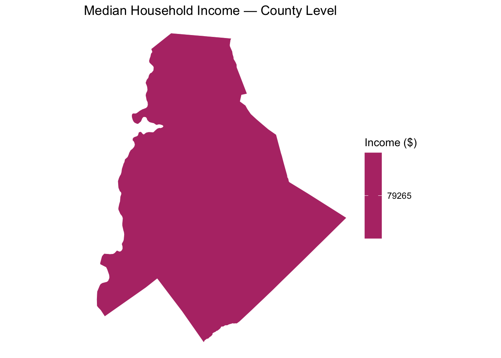
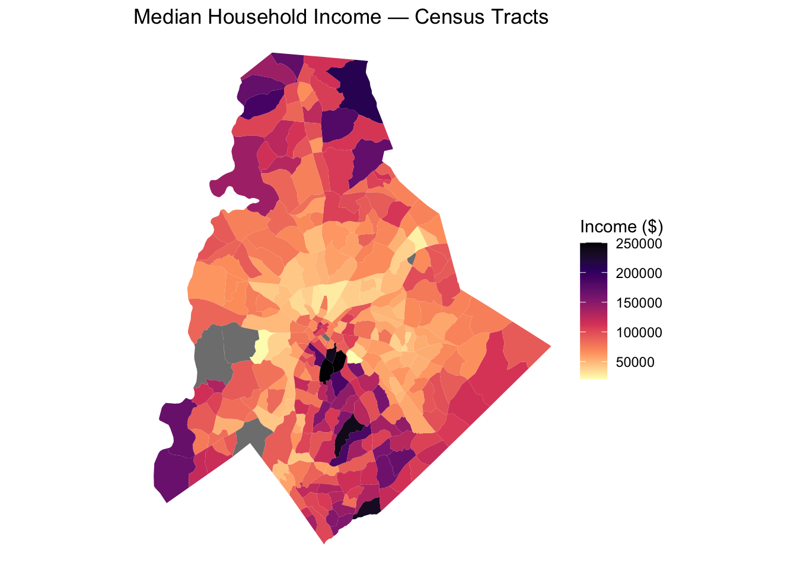
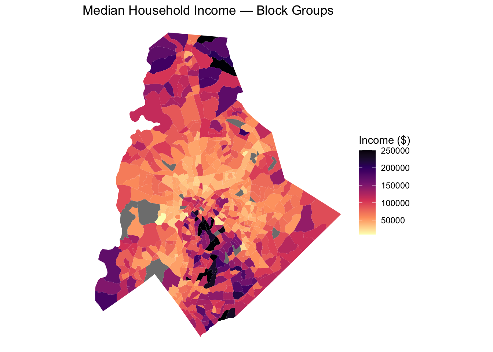
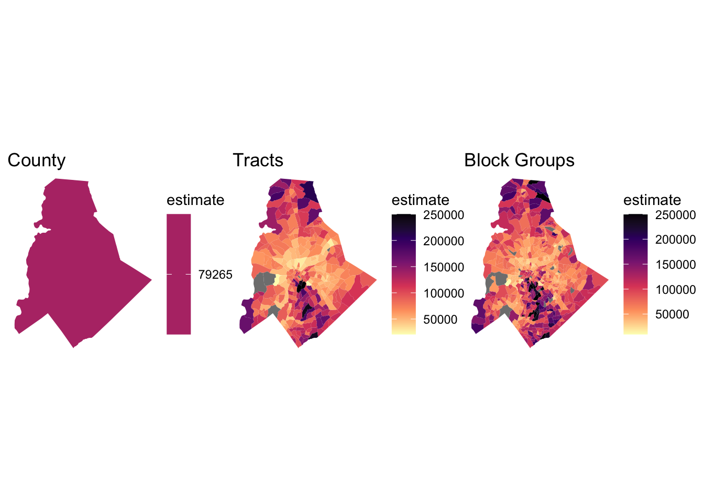
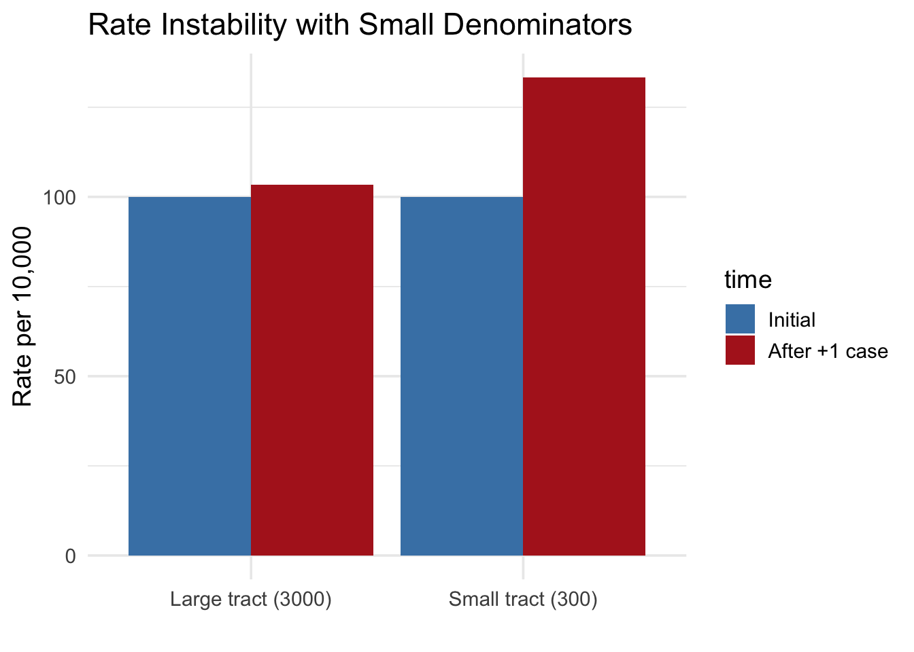
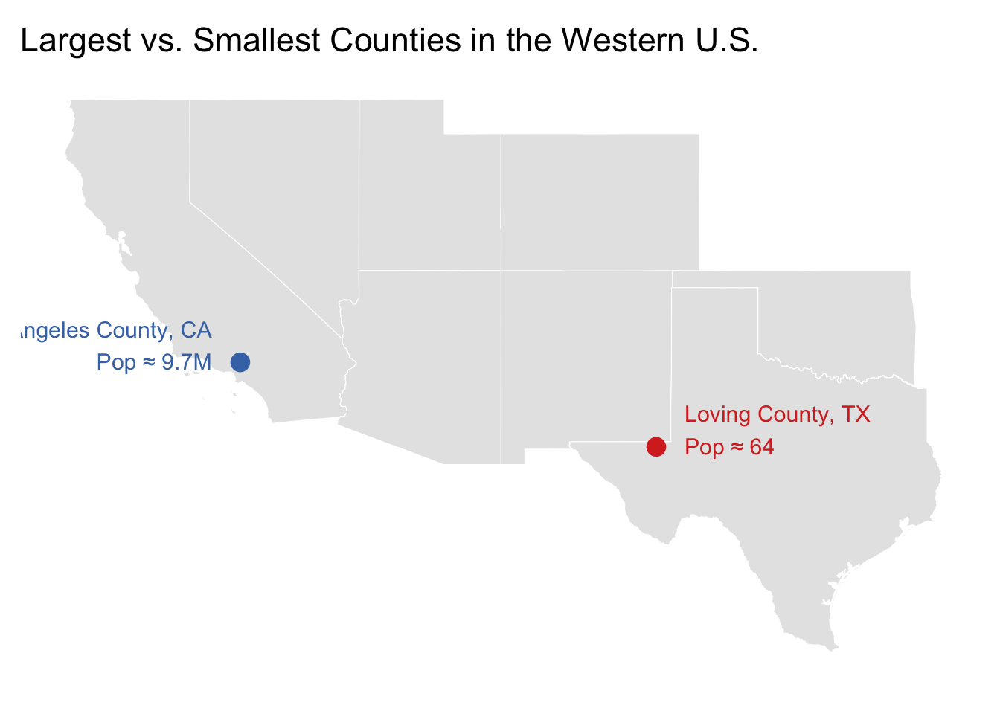
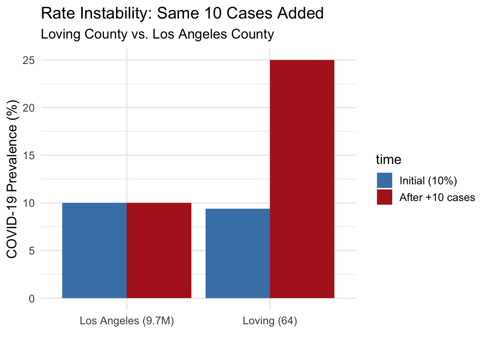

library(tidyverse)
library(sf)
library(tidycensus)
library(tigris)
library(patchwork)
options(tigris_use_cache = TRUE)
# census_api_key("YOUR_KEY_HERE", install = TRUE)Cartography & Population Health: Scale and Rate Instability
Why Maps Can Mislead Us
Overview
In population health, maps are powerful—but they can mislead.
This document demonstrates:
- How scale (county vs. tract vs. block group) reshapes what we see
- How small denominators create unstable rates
- How extreme population differences (Loving vs. LA County) amplify this problem
1. Scale in Population Health Mapping (MAUP)
1.1 County-Level Income
meck_county <- get_acs(
geography = "county",
variables = "B19013_001",
state = "NC",
county = "Mecklenburg",
geometry = TRUE,
year = 2022
)
ggplot(meck_county) +
geom_sf(aes(fill = estimate), color = "white") +
scale_fill_viridis_c(option = "magma", direction = -1) +
labs(title = "Median Household Income — County Level", fill = "Income ($)") +
theme_void()
1.2 Census Tract Income
meck_tracts <- get_acs(
geography = "tract",
variables = "B19013_001",
state = "NC",
county = "Mecklenburg",
geometry = TRUE,
year = 2022
)
ggplot(meck_tracts) +
geom_sf(aes(fill = estimate), color = NA) +
scale_fill_viridis_c(option = "magma", direction = -1) +
labs(title = "Median Household Income — Census Tracts", fill = "Income ($)") +
theme_void()
1.3 Block Group Income
meck_bg <- get_acs(
geography = "block group",
variables = "B19013_001",
state = "NC",
county = "Mecklenburg",
geometry = TRUE,
year = 2022
)
ggplot(meck_bg) +
geom_sf(aes(fill = estimate), color = NA) +
scale_fill_viridis_c(option = "magma", direction = -1) +
labs(title = "Median Household Income — Block Groups", fill = "Income ($)") +
theme_void()
1.4 Side-by-Side Comparison
p1 <- ggplot(meck_county) +
geom_sf(aes(fill = estimate), color = NA) +
scale_fill_viridis_c(option = "magma", direction = -1) +
ggtitle("County") + theme_void()
p2 <- ggplot(meck_tracts) +
geom_sf(aes(fill = estimate), color = NA) +
scale_fill_viridis_c(option = "magma", direction = -1) +
ggtitle("Tracts") + theme_void()
p3 <- ggplot(meck_bg) +
geom_sf(aes(fill = estimate), color = NA) +
scale_fill_viridis_c(option = "magma", direction = -1) +
ggtitle("Block Groups") + theme_void()
p1 + p2 + p3
2. Rate Instability: Small Denominators
2.1 Hypothetical Demonstration (+1 case)
df <- tibble(
tract = c("Small tract (300)", "Large tract (3000)"),
population = c(300, 3000),
cases_initial = c(3, 30),
cases_new = c(4, 31)
) %>% mutate(
rate_initial = (cases_initial / population) * 10000,
rate_new = (cases_new / population) * 10000,
increase = rate_new - rate_initial
)
df# A tibble: 2 × 7
tract population cases_initial cases_new rate_initial rate_new increase
<chr> <dbl> <dbl> <dbl> <dbl> <dbl> <dbl>
1 Small tract… 300 3 4 100 133. 33.3
2 Large tract… 3000 30 31 100 103. 3.33df_long <- df %>%
pivot_longer(c(rate_initial, rate_new), names_to="time", values_to="rate")
ggplot(df_long, aes(tract, rate, fill=time)) +
geom_col(position="dodge") +
scale_fill_manual(values=c("steelblue","firebrick"),
labels=c("Initial","After +1 case")) +
labs(title="Rate Instability with Small Denominators",
y="Rate per 10,000", x="") +
theme_minimal(base_size=14)
3. Real-World Extremes: Loving vs. Los Angeles County
western_states <- c("CA","NV","AZ","UT","CO","NM","TX","OK")
states_west <- states(cb=TRUE, year=2022) %>% filter(STUSPS %in% western_states)
counties_west <- counties(cb=TRUE, year=2022) %>% filter(STATEFP %in% states_west$STATEFP)
loving <- counties_west %>% filter(STATEFP=="48", COUNTYFP=="301")
la <- counties_west %>% filter(STATEFP=="06", COUNTYFP=="037")
loving_pt <- st_centroid(loving)
la_pt <- st_centroid(la)
ggplot() +
geom_sf(data=states_west, fill="grey90", color="white") +
geom_sf(data=loving_pt, color="#d73027", size=4) +
geom_sf(data=la_pt, color="#4575b4", size=4) +
annotate("text",
x=st_coordinates(loving_pt)[1]+1,
y=st_coordinates(loving_pt)[2]+0.5,
label="Loving County, TX
Pop ≈ 64",
color="#d73027", size=4, hjust=0) +
annotate("text",
x=st_coordinates(la_pt)[1]-1,
y=st_coordinates(la_pt)[2]+0.5,
label="Los Angeles County, CA
Pop ≈ 9.7M",
color="#4575b4", size=4, hjust=1) +
labs(title="Largest vs. Smallest Counties in the Western U.S.") +
theme_minimal(base_size=14) +
theme(panel.grid=element_blank(),
axis.text=element_blank(),
axis.title=element_blank())
3.1 COVID-19 Example: Same Rate, +10 Cases
loving_pop <- 64
la_pop <- 9721138
loving_initial <- round(loving_pop * 0.10)
la_initial <- round(la_pop * 0.10)
loving_new <- loving_initial + 10
la_new <- la_initial + 10
df_instability <- tibble(
county = c("Loving (64)", "Los Angeles (9.7M)"),
population = c(loving_pop, la_pop),
initial_cases = c(loving_initial, la_initial),
new_cases = c(loving_new, la_new),
initial_rate = (initial_cases / population) * 100,
new_rate = (new_cases / population) * 100,
increase = new_rate - initial_rate
)
df_instability# A tibble: 2 × 7
county population initial_cases new_cases initial_rate new_rate increase
<chr> <dbl> <dbl> <dbl> <dbl> <dbl> <dbl>
1 Loving (64) 64 6 16 9.38 25 1.56e+1
2 Los Angeles… 9721138 972114 972124 10.0 10.0 1.03e-4df_long2 <- df_instability %>%
pivot_longer(c(initial_rate, new_rate), names_to="time", values_to="rate")
ggplot(df_long2, aes(county, rate, fill=time)) +
geom_col(position="dodge") +
scale_fill_manual(values=c("steelblue","firebrick"),
labels=c("Initial (10%)","After +10 cases")) +
labs(title="Rate Instability: Same 10 Cases Added",
subtitle="Loving County vs. Los Angeles County",
y="COVID-19 Prevalence (%)", x="") +
theme_minimal(base_size=14)
Conclusion
This document demonstrates:
- How scale shapes what we see
- Why small populations produce unstable rates
- How extreme population differences (Loving vs. LA County) make interpretation tricky
In population health, a map is only as good as the context behind it.